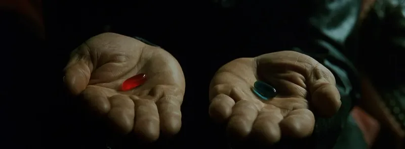

Season 1
각성
세계가 가짜라는 사실을 알아차리고, 선택의 문 앞에 선다.
THE MATRIX
The choice is already made.

“You take the red pill—you stay in Wonderland, and I show you how deep the rabbit hole goes.”
진실은 불편하다.
하지만 그 끝에서, 현실은 처음 시작된다.
“You take the blue pill… the story ends, you wake up in your bed and believe whatever you want to believe.”
거짓은 편안하다.
그리고 대부분은 그 안에서 안심한다.
Time defines the moment. Choice opens the path. Truth reveals the cost.
Season 1
세계가 가짜라는 사실을 알아차리고, 선택의 문 앞에 선다.
Season 2
인간과 기계의 충돌은 깊어지고, 전쟁은 신념을 시험한다.
Season 3
파괴 대신 균형을 택하며, 질서는 새로운 형태로 갱신된다.
Awakening / Fracture
핵심 키워드: 각성 / 선택 / 균열 / 구원
가짜 평온의 틈을 가장 먼저 의심하고, 선택으로 자신을 증명한 존재.
“나는 예언이 만든 존재가 아니다. 내가 선택한 길이 곧 나다.”
“I am not what prophecy made me. I am what I chose to become.”
자세한 내용은 Matrix 소개 페이지에서 확인.